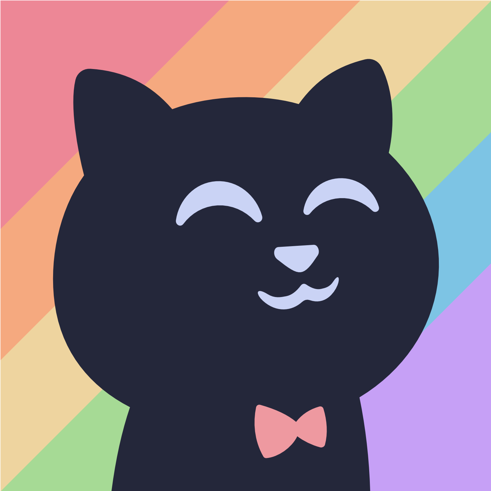
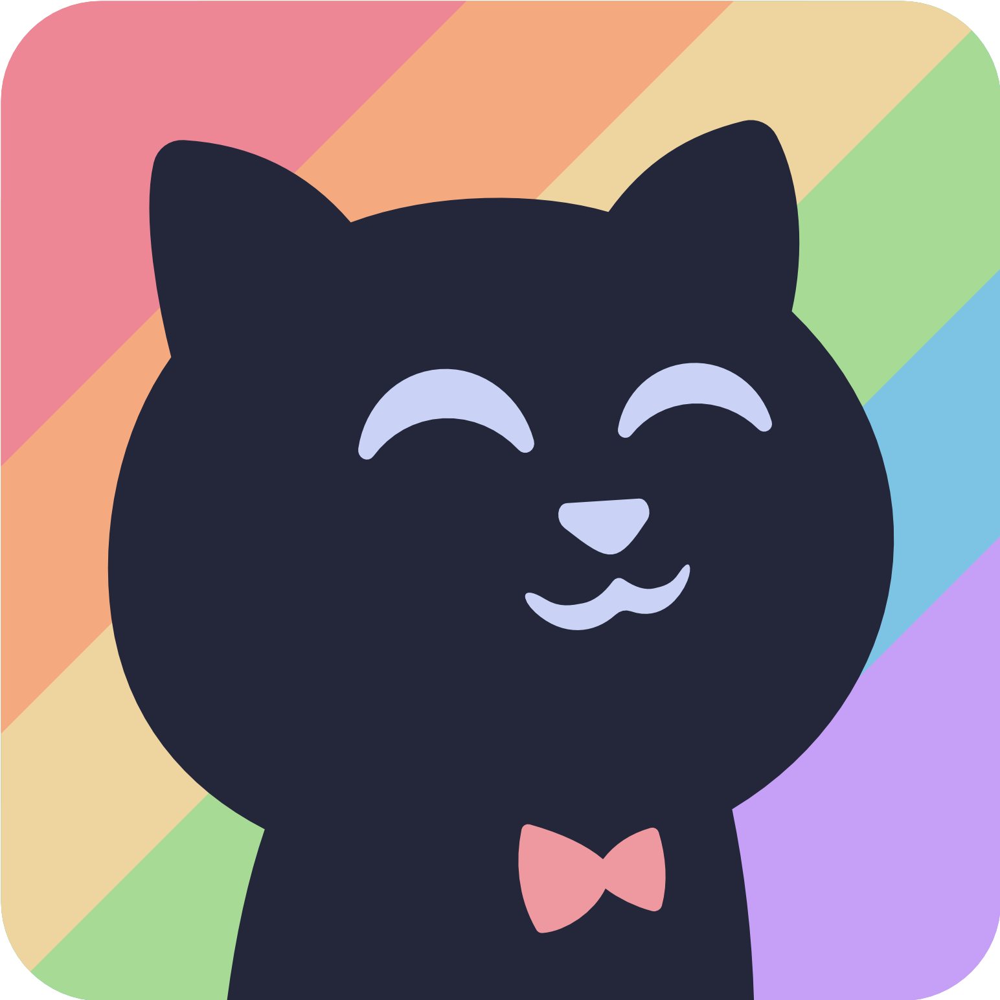

[ brand mark — catppuccin cat ]
 circle
circle
macchiato square
squirclethree poses, one cat
the catppuccin cat is the only figurative mark. it's used as a tile in the discord dms button and as the favicon of mock screens. always on a colored or black background — never on white.